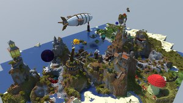

2b2t is a Minecraft server with no rules (IP to join: 2b2t.org) that has been running on the same map since February 2011, and is owned anonymously. It has had over 1,000,000 players join throughout the years, and is often called the worst Minecraft server for the toxic playerbase it has maintained. It is known for players taking the game to its absolute limits, and the server is usually at the forefront of exploits, hacks, and PvP. The server is one of the oldest running servers in Minecraft, behind MinecraftOnline and others such as Nerd.nu. The server has seen thousands of groups and bases rise and fall throughout its history. It offers players a Minecraft experience unparalleled in any other server or video game. It is full of material that can be offensive. The chat is filled with offensive text, and builds can be seen in many places.
